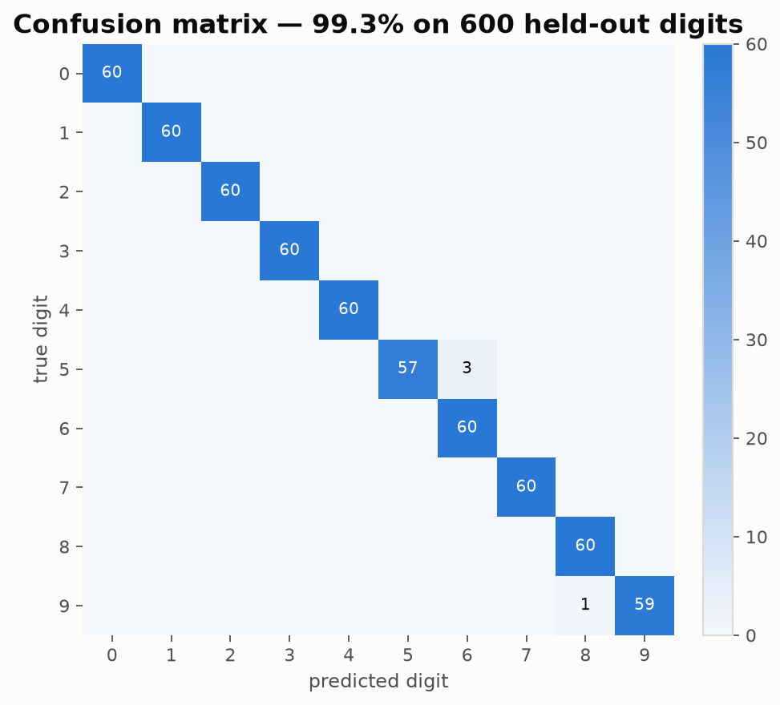
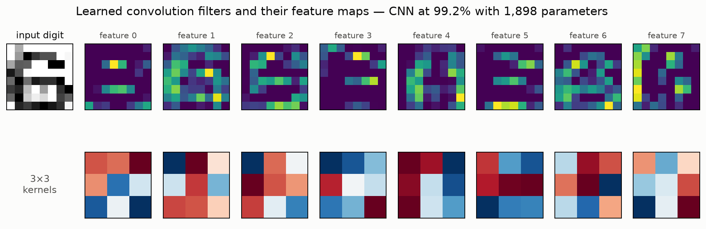
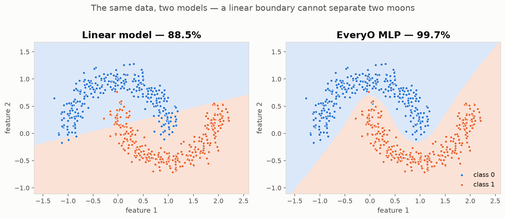
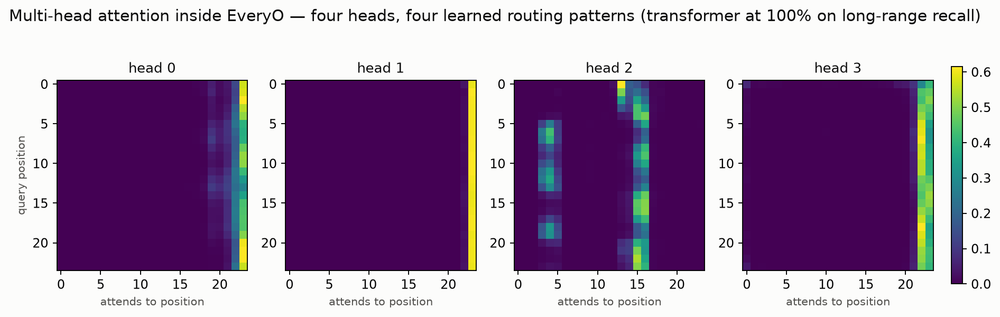
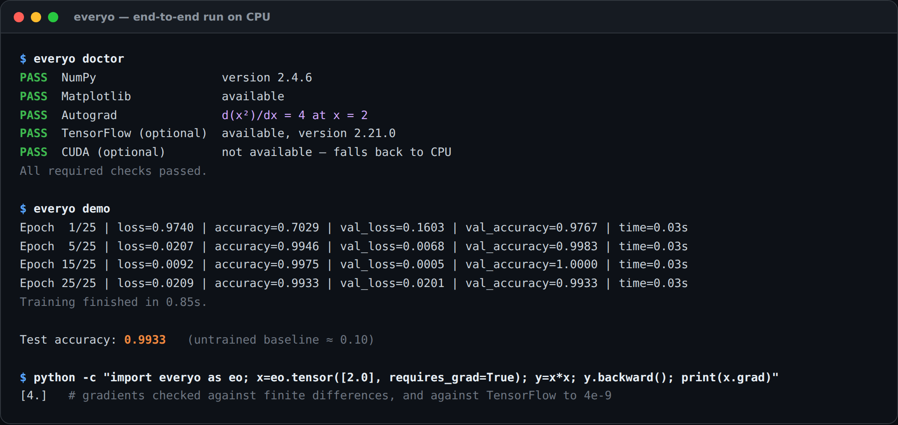

Flexible Neural Networks
Design and adapt architectures to match your ideas.
OPEN-SOURCE AI FRAMEWORK
A flexible framework for designing, training, and exploring neural networks. Written from scratch in Python on NumPy.
import everyo as eo
model = eo.Sequential(eo.Linear(8, 1))Learn the fundamentals. Inspect every gradient. Build experiments with a neural network framework written from scratch in Python on NumPy.
MIT licensed No accounts or API keys Runs locally
import everyo as eo
# A tensor. A graph. A gradient.
x = eo.tensor([2.0], requires_grad=True)
y = x * x
y.backward()
print(x.grad)[4.]dy/dx = 2xLearning & teaching
Numerical analysis
Reproducible experiments
WHY EVERYO
From experimentation to extensible neural architectures, work with tools designed for clarity and control.
Design and adapt architectures to match your ideas.
import everyo as eomodel = eo.Sequential( eo.Linear(8, 1))# experiment, iterate, extendMove from prototype to experimentation with clean Python tools.
Understand models through transparent visual insights.
There is almost nothing in between that you can read. EveryO is that middle: small enough to follow end to end in an afternoon, and verified carefully enough to trust the numbers it produces.
You can follow one number from loss.backward() through the graph walk,
into a matrix multiply, and out to a hand-written CUDA kernel — reading real
code the entire way.
Every differentiable operation is checked against central finite differences, and the numerical results against TensorFlow. Where the two disagree, the project states by how much.
No accounts, no API keys, no credentials, no telemetry and no network calls from
the core. Model loading is pickle-free by design — an .evo
archive cannot execute code.
pip install -e . and everything runs, offline, on a laptop.EveryO is not a production training runtime. The roadmap is finished, but “implemented” is not “battle-tested”: it will not out-perform a tuned framework on a large model, its CUDA paths need a GPU this project’s CI does not have, and multi-node training has been exercised across processes rather than across machines.
Everything in this table is implemented and covered by the test suite. Items that are experimental or planned are labelled as such rather than quietly listed alongside.
| Area | What it covers | Status |
|---|---|---|
| Tensors | dtypes, devices, broadcasting, indexing, reductions, NumPy interop | Available |
| Autograd | reverse-mode gradients for 25+ operations, iterative graph walk, no_grad | Available |
| Layers | Linear, Conv2D, MaxPool2D, AvgPool2D, Embedding, Flatten, Dropout, Sequential | Available |
| Normalization | BatchNorm1D, BatchNorm2D, LayerNorm — running statistics survive save/load | Available |
| Recurrent | RNN, LSTM (unit forget bias), GRU — BPTT on the same autograd engine | Available |
| Attention | MultiHeadAttention, PositionalEncoding, TransformerEncoder, causal and padding masks | Available |
| Losses | MSE, MAE, BCE, BCE-with-logits (numerically stable), cross-entropy | Available |
| Optimizers | SGD, momentum, Nesterov, weight decay, Adam, AMSGrad | Available |
| Training | validation, metrics, early stopping, checkpointing, LR scheduling, gradient clipping | Available |
| Mixed precision | autocast and GradScaler, fp32 master weights, dynamic loss scaling | Available |
| ONNX export | export_onnx layer by layer — verified against ONNX Runtime, not only the schema checker | Available |
| Tracing ONNX export | export_onnx_traced — runs the model, exports the graph it leaves behind, so recurrent and attention models export too | Available |
| Quantization | quantize_dynamic — post-training int8 weights, per-output-channel scales, no calibration set | Available |
| Profiling | profile() — nested module timings with shapes, and Chrome trace export | Available |
| Distributed | data parallelism on one machine, or across machines with init_tcp_process_group | Available |
| Serialization | .evo archives that cannot execute code on load | Available |
| CUDA | 5 hand-written kernels with pybind11 bindings and automatic CPU fallback | Needs a GPU |
| GPU-resident tensors | eo.cuda.to_device — a chain of operations stays on the device instead of copying back per call | Needs a GPU |
Anyone can write something that looks like a framework. These are the numbers the test suite produces, on CPU, with no GPU and no credentials required.
gradients vs finite differences ..... every differentiable op, float64
matmul vs TensorFlow ............. 0.000e+00
conv2d vs TensorFlow ............. 0.000e+00 (valid/same, strided)
max/avg pool vs TensorFlow ............. 0.000e+00
relu vs TensorFlow ............. 0.000e+00
softmax vs TensorFlow ............. 2.980e-08
cross-entropy vs TensorFlow ............. exact to 6 decimals
its GRADIENT vs TensorFlow ............. 3.725e-09Every gradient is compared against a central finite-difference approximation in float64. A layer is not considered done because it trains — it is done when its derivative matches the numerical one.
Tensors use the NHWC layout TensorFlow uses, so convolution results
compare against tf.nn.conv2d directly — no transposing, no
wiggle room.
Every image below came out of an actual run in the repository, rendered with EveryO's own visualization module. Reproduce them with the bundled example scripts.

examples/neural_network.py.



TransformerEncoder, each having learned its own routing pattern.1.38e-11, LSTM
7.71e-06 — roughly 560,000× larger.
The things a framework is supposed to grow into. All of them are implemented, and all of them are measured rather than claimed — including where they do not help.
autocast + GradScaler
matmul and conv2d run in float16; everything else stays in
float32 and the parameters never leave it. The backward pass genuinely runs in
float16, so gradients genuinely underflow — which is what loss scaling exists
to fix.
EveryO is NHWC; ONNX Conv is NCHW. Rather than
paper over that, every convolution is wrapped in a real pair of Transpose
nodes and "same" padding is written as explicit pads.
Conv node, not the primitives it decomposes into.
An LSTM is a program, not a formula — there is no ONNX node that means
one. So export_onnx_traced runs the model and exports the graph the run
leaves behind, and never needs to know what an LSTM is.
dynamic_batch checks its own rewrite before writing the file.
quantize_dynamic stores Linear weights as signed int8 with
one symmetric scale per output channel. Activations stay in floating point, so no
calibration dataset is needed and the change is inference-only.
profile() is opt-in and nests with your modules, reporting calls and
total/mean/max milliseconds per layer. export_chrome_trace() writes a
file you open in chrome://tracing.
record_function() labels your own spans, such as data loading.Processes, not threads, with a shared-memory gradient all-reduce. Averaging over disjoint shards is the same arithmetic as one large batch — so the result should match single-process training, and the example checks that.
init_tcp_process_group swaps the shared-memory group for a TCP one: rank
zero runs a rendezvous server, every rank connects, and the collective is the same
arithmetic over a socket instead of shared memory.
OMP_NUM_THREADS=1 first: on the same 4-core box, four workers took 1.8 s
with it set and 11.0 s without — slower than not parallelising at all.
A framework you cannot leave is a trap. Two exporters cover the whole library between them, and every export on this page was re-run through ONNX Runtime and compared against EveryO — not trusted because the schema checker accepted it.
| Model | Traced ops | Max |diff| |
|---|---|---|
RNN | 45 | 3.02e-07 |
LSTM | 141 | 1.19e-07 |
GRU | 165 | 1.19e-07 |
MultiHeadAttention | 21 | 4.77e-07 |
TransformerEncoderBlock | 46 | 1.19e-06 |
TransformerEncoder ×2 | 101 | 8.34e-07 |
import numpy as np
import everyo as eo
model = eo.LSTM(16, 32, seed=0).eval()
rng = np.random.default_rng(0)
x = rng.standard_normal((4, 8, 16)).astype("float32")
eo.export_onnx_traced(
model, "lstm.onnx", example_input=x
)
# and check it, rather than assume:
np.abs(eo.run_onnx("lstm.onnx", x)
- model(eo.tensor(x)).data).max()
1.1920929e-07dynamic_batch recovers the batch dimension
where it can and verifies that against a second batch size before writing the
file, falling back to a fixed batch when the rewrite does not hold.
One dependency for the core: NumPy. TensorFlow and CUDA are optional and the suite skips their tests cleanly when they are absent.
Clone and install in editable mode.
git clone https://github.com/krishanth7/EveryO.git
cd EveryO && pip install -e .everyo doctor reports what is present and what is optional.
everyo doctor
everyo demo # trains a digit classifier end to endThe API is deliberately familiar, so the interesting part is the source beneath it.
import everyo as eo
model = eo.Sequential(
eo.Conv2D(1, 8, 3, padding="same"),
eo.ReLU(),
eo.MaxPool2D(2),
eo.Flatten(),
eo.Linear(4 * 4 * 8, 10),
)
trainer = eo.Trainer(
model,
eo.Adam(model.parameters(), lr=0.005),
eo.CrossEntropyLoss(),
metrics=["accuracy"],
)
history = trainer.fit(train_loader, epochs=25)
# Export it for any other runtime
model.eval()
eo.export_onnx(model, "model.onnx",
input_shape=(1, 8, 8, 1))
everyo doctor and everyo demo, running end to end on a machine with no GPU.The roadmap began as ten things EveryO could not do. All ten now ship. A finished list is only worth anything if it says what was actually checked, so the second table does exactly that — including the two rows nobody here has been able to run.
Conv2D, MaxPool2D, AvgPool2DBatchNorm1D, BatchNorm2D, LayerNormRNN, LSTM, GRU, TransformerEncoderautocast, GradScalerexport_onnx, verified against ONNX Runtimeeo.cuda.to_deviceinit_tcp_process_groupquantize_dynamic, profileexport_onnx_traced| Item | Verified how | Not verified |
|---|---|---|
| Tracing ONNX exporter | Six recurrent and attention models exported and re-run through ONNX Runtime; agreement with EveryO to 1.2e-06 or better | Nothing outstanding |
| Quantization | int8 weights round-trip; 100% argmax agreement with float32, largest output drift 0.0222 | Speed. int8 here is a size and fidelity change, not a faster kernel |
| Profiling | Nested module timings, recorded shapes and Chrome trace export, all asserted | Nothing outstanding |
| Multi-node training | All-reduce across two separate OS processes over real TCP sockets — different interpreters, nothing shared but the wire | Two physically separate machines. No second host is available in CI |
| GPU-resident tensors | Transfer counting: a ten-operation chain crosses the host–device boundary 3 times, not 30 | The CUDA kernels themselves. No GPU, no CUDA toolkit and no driver in this project’s CI |
Sponsors
Support ongoing maintenance, documentation, and hardware validation.
Become a sponsor → ProjectThe cheapest way to help. It costs nothing and it is how the next person learning autograd finds this.
Open on GitHub →One slot, self-hosted: an image and a link, no tracking script. Enquiries through the repository discussions.
Enquire →EveryO is independently maintained, and how it is run is written down rather than implied. If you are deciding whether to depend on it, contribute to it or teach with it, these documents say who decides what and what is expected of participants.
| Document | Read it when you want to know |
|---|---|
| Governance | Who maintains EveryO, how technical decisions are made, and who approves a release |
| Project policy | Terms for using, contributing to, forking and referring to the project |
| Repository rules | The standard an issue, discussion or pull request is held to |
| Code of Conduct | Expected behaviour, and how to report a problem |
| Contributing guide | Development setup, running the suite, and getting a change reviewed |
| Support | Where to ask a question, and what response to expect |
| Security policy | How to report a vulnerability privately, and the threat model |
| License | MIT — the legal terms the project policy supplements but never replaces |
Readable tensors, gradients, and training on NumPy. Start there, and follow a number until it stops surprising you.